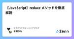
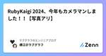

ラブグラフのエンジニアブログのフィード
https://zenn.dev/p/lovegraph
https://corporate.lovegraph.me 出張写真撮影サービス『ラブグラフ』やオンライン写真教室『ラブグラフアカデミー』を提供しています
フィード

【JavaScript】reduce メソッドを徹底解説 1
1
ラブグラフのエンジニアブログのフィード
こんにちは！ラブグラフエンジニアのひろです。今回は JavaScript の reduce メソッドについて書いていきます。reduce メソッドは、配列の各要素に対して関数を適用し、単一の出力値を生成する強力なメソッドです。このメソッドは、複雑なデータ構造を単純化したり、異なるデータ形式への変換をおこなう場合に特に有効なので、使い方や気を付けるべきポイントなどについて紹介します。 reduce メソッドの基本的な使い方reduce の基本構文は次の通りです：array.reduce(function(accumulator, currentValue, currentI...
1日前

RubyKaigi 2024、今年もカメラマンしました！！【写真アリ】 1
ラブグラフのエンジニアブログのフィード
ラブグラフのCTOをしております横江( @yokoe24 )です！ RubyKaigi の写真撮影をしました！今年も株式会社ラブグラフはフォトスポンサーとして、RubyKaigi のカメラマンをさせていただきました！エンジニアのひろさんと私、現地のカメラマンさん２名の４名体制で撮影がおこなわれました。準備日（Day 0）に現地のカメラマンさんと初顔合わせをし、講演は３レーンあったので、大ホールに２名、他のホールに１名ずつのカメラマンをつけるという体制にいたしました。現地カメラマンの方々はふだんウェディングを撮るらしく、こういうカンファレンスの撮影はないそうで緊張して...
13日前

Vue.js と Materialize の Chips で複数選択の入力フィールドを作る
ラブグラフのエンジニアブログのフィード
こんにちは！株式会社ラブグラフのエンジニアのけいすけと申します！今回は Vue.js と Materialize Chips を使って、下の画像にあるような複数選択ができる入力フィールドの作り方を紹介します。簡単に作れて入力の補完もできます！ サンプル下に CodePen のサンプルを用意しました。ぜひ触ってみてください！これ以降の説明でタグという用語が出てきますが、フォームに入力された選択肢のことだと思ってください。（下のサンプルにある「HTML」や「CSS」など）このサンプルでできることは次の3つです。タグを追加するタグを削除する文字列を入力すると候補を表示す...
15日前
Ruby の unless は使わないほうが良い
ラブグラフのエンジニアブログのフィード
はじめにこんにちは、ラブグラフエンジニアの熊谷です。プログラミング言語Rubyには、条件分岐を表現するためのキーワードとして if だけでなく、 unless も存在します。 unless は「〜でない場合」という条件を簡潔に表現するのに便利ですが、個人的には使わないほうがいいと思っているので、その理由をまとめていきたいと思います。 unless の利点unless は「〜でない場合」という条件を簡潔に表現できます。特に単純な条件の時に利用するのであれば便利です。unless user.nil? puts "User exists."end単純な条件文を利用するだ...
22日前
AWS CDK で作成する Lambda に Lambda Insights を対応させる【TypeScript】
ラブグラフのエンジニアブログのフィード
ラブグラフでエンジニアをしています横江( @yokoe24 )です！ラブグラフでは AWS Lambda を活用していて、そのコードは AWS CDK を使って管理しております。その中で Lambda Insights の対応で少し手間取りましたので、ここに方法を残しておきます。 Lambda Insights とは？『Lambda Insights』 は、上の画像のように Lambda の実行結果をモニターしてくれる機能です。メモリ負荷や所要時間を見られますので、現在のパフォーマンスを見て Lambda の設定や、実行しているコードの改善に役立てられます。AWS...
1ヶ月前
【Rails】ActiveModel::Attributes の活用法
ラブグラフのエンジニアブログのフィード
こんにちは！ラブグラフエンジニアのひろです。今回は、データベースのカラムを追加することなく、クラスに属性を持たせることができる ActiveModel::Attributes について書いていきます。 ActiveModel::Attributes の基本ActiveModel::Attributes は、 Active Model の一部であり、任意のクラスに型付けされた属性を宣言的に追加することができます。これにより、 Active Record モデルと同様の方法で、非永続属性を扱うことができるようになります。schema.rbcreate_table "user...
1ヶ月前
【Ruby】RubyKaigi でクリエイティブコーディングなるものと出会ったのでやってみた
ラブグラフのエンジニアブログのフィード
こんにちは！ラブグラフエンジニアのひろです。RubyKaigi 2024 にフォトスポンサーとして参加し、写真をたくさん撮ってきました！撮影をしながら各セッションをつまみ食いしたんですが、初日の Keynote [1] と2日目の Lightning Talks [2] のなかで クリエイティブコーディング というものが紹介されていました。初めて聞いた言葉だったので、クリエイティブコーディングとはどんなものなのか、実際に挑戦してみました！ クリエイティブコーディングとはコードを書いて絵やアニメーション、サウンドなどを作る活動だそうです。https://zenn.dev/...
1ヶ月前
レビュー待ちプルリクを減らす GitHub Actions
ラブグラフのエンジニアブログのフィード
ラブグラフのエンジニア＆CTOをしております横江( @yokoe24 )です！ラブグラフでは昨年、エンジニアインターンが４名も増えました！🎉おかげでチームの開発力が上がったのですが、こんな問題も！ プルリク溜まっていく問題どこの会社でもあるあるだと思うのですが、開発チームの人数が増えてくると、開発力が上がりプルリクエストがいっぱい作られ、今度はレビューが間に合わない問題が起こっていきます。前までは、「自分のプルリクエストがレビューされるまで、開発チームのチャンネルにリマインドし続けよう！」という方針でなんとかなっていたのですが、インターンは常に勤務してるわけではないの...
1ヶ月前
Intersection Observer APIで実装する無限スクロール
ラブグラフのエンジニアブログのフィード
こんにちは！株式会社ラブグラフでエンジニアをしているけいすけと申します！今回は JavaScript の Intersection Observer API を使って無限スクロールを実装する方法を紹介します。 Intersection Observer API とはIntersection Observer API とは HTML 中の要素の見え具合をチェックして、指定した見え具合になったときに任意の処理を実行することができる API です。これを使うと無限スクロールを簡単に実装できます。早速、サンプルを見てみましょう！ 無限スクロールのサンプル（説明用）下に Inte...
1ヶ月前
骨伝導イヤホンのすゝめ
ラブグラフのエンジニアブログのフィード
概要骨伝導イヤホンは最高です。shokzラブグラフのエンジニアの熊谷です。今回は自分が普段エンジニアリングをしている時に愛用している骨伝導イヤホンの話をしたいと思います。よろしくお願いします。 骨伝導イヤホンって？骨伝導イヤホンとは、音を直接耳に送るのではなく、頭部の骨を振動させて音を内耳に伝えるタイプのイヤホンです。空気振動ではなく骨を直接振動させるって、ちょっとロマンありますよね！それのどんなところがいいか、自分の実体験を元に紹介していきます。 メリット いい意味で、環境音を妨げない音楽を聞く際に没入感を大事にしている人には合わないのかもしれません。耳...
2ヶ月前
YAMLで複数行を書きたいときにインデントしたらハマった
ラブグラフのエンジニアブログのフィード
ラブグラフでエンジニアをしております横江( @yokoe24 )です。YAML を書いていて思わぬ罠にハマったので書いておきます。 何が起きたか罠は、GitHub Actions を書いているときに発生しました。スクリプトの実行に関して引数が見やすいよう、改行をおこなうように変更しました。- name: Run gh-pull-requests-slack-reminder run: > gh-pull-requests-slack-reminder --token ${{ secrets.GITHUB_TOKEN }} --owne...
2ヶ月前
参考になる技術的 Podcast の紹介
ラブグラフのエンジニアブログのフィード
皆さんこんにちは！ラブグラフエンジニアの関口です！皆さんは Podcast やラジオは好きですか？私は通勤中や寝る前にたまに聞いています。好きなジャンルは様々ですが、エンジニア向けの Podcast も聞くことが多いです！今回は私が好きなエンジニア向け Podcast を紹介させていただこうと思います！ 紹介する Podcast 一覧論より動くものブレインストーミングfukabori.fmdevchat.fm 論より動くものSTORES を運営するSTORE株式会社のCTOである、藤村さんがホストの Podcast。藤村さんが STORES 株式会社に所属...
2ヶ月前
【JavaScript】ボタン連打されてもAPIリクエストを重複させたくない！
ラブグラフのエンジニアブログのフィード
こんにちは！ラブグラフエンジニアのひろです。この記事では、トグルボタンをクリックした際にAPIからデータを取得する処理において、連打によるデータ取得の重複問題を解消した経緯と、その方法について書いていきます。 起きていたこと47都道府県の一覧を表示していて、ユーザーがいずれかの都道府県をクリックすると、その都道府県に関連する市区町村のデータを取得するAPIが走り、結果を一覧表示する。という機能を作っていました。しかし、このトグルボタンを連打すると、市区町村データの取得処理が同時に複数回走ってしまい、結果としてデータが重複して表示されてしまう問題が発生しました。富山県の例。...
2ヶ月前
Moment.js から Day.js に移行した話
ラブグラフのエンジニアブログのフィード
ラブグラフのエンジニアの熊谷です。今回は Moment.js から Day.js に移行した話をしていこうと思います。よろしくお願いします。 概要Moment.js のサポート終了に伴い、 Day.js を利用することにしました。Day.js, Moment.js は主に JavaScript 内で時間操作に関する便利なメソッドを用意してくれているライブラリです。例えば現在の日時を取得して、数日後の日付を表示したり、特定の日時を YYYY-MM-DD の形式で表示したりすることができます。 移行の背景: Moment.js の開発が終了していた公式のProject Sta...
3ヶ月前
ラブグラフエンジニアチームの１週間のMTGを紹介します
ラブグラフのエンジニアブログのフィード
みなさん、こんにちは！ラブグラフエンジニアの関口です！突然ですが、みなさんのチームではいくつくらいの定例ミーティングがありますか？定例ミーティングは開発業務に関わるものからチームビルディングに関するものまで、チームや会社の文化が出るものだと思います。今回は、ラブグラフエンジニアチームが１週間でどのような定例ミーティングをしているのかを紹介します。 ミーティング一覧月曜日と金曜日に会議を集中させ、それ以外の曜日では、開発に集中できるようになっています。ミーティングはオフライン開催で、メンバー全員が話しやすい環境を作りつつ、メンバーの状況に合わせ、オンラインも混合して...
3ヶ月前
【Rails】メソッドなどの存在を確認する respond_to?, defined?, has_attribute? の使い分け
ラブグラフのエンジニアブログのフィード
こんにちは！ラブグラフエンジニアのひろです。インスタンスに対して指定のメソッドが存在するかどうかを確認したい時に、使える方法を調べたので紹介します。 概要Rails アプリケーションを開発する過程で、特定のメソッドやカラムが存在するかどうかを確認する必要がしばしばあります。Railsはこのための便利なメソッドをいくつか提供しており、今回は respond_to?, defined?, および has_attribute? の使用方法について解説します。メソッド概要respond_to?あるオブジェクトが特定のメソッドに対して応答するかどうかdefi...
3ヶ月前
エンジニア未経験からテックリードレベルにどうやってなれたのか、社員に聞いてみた
ラブグラフのエンジニアブログのフィード
ラブグラフでCTOをしております横江( @yokoe24 )です。エンジニアがどうやったら成長するのか、というところに興味があって、この３年で目覚ましい成長を遂げたひろさんにお話を聞いてきました！🌟 いつ入社しましたか？2019年3月に入社しました。最初に業務委託を１年やって、その後に正社員になり、いま５年が経ったところです。最初の１年間は、未経験エンジニアとして、『パーフェクトRuby』を読むなど勉強させてもらいつつ業務をしていました。 その前は何をされていたんでしょう？高校卒業してからは、造船会社で給与計算など総務・経理業務を３年間やっていました。会社の運動会...
3ヶ月前
Active RecordでのOR条件の書き方
ラブグラフのエンジニアブログのフィード
こんにちは！ラブグラフでエンジニアをしているけいすけと申します。業務の中でOR条件のクエリを書く機会があったので書き方をまとめておきます。例として、マッチングアプリのようなサービスを扱っていて、その中から特定の条件を満たすユーザーを取得する場合を考えてみます。このサービスにはユーザーの情報を持つ users テーブルがあり、name、address、occupation、hobbyはそれぞれユーザーの名前、住所、職業、趣味を表すとします。usersテーブルnameaddressoccupationhobby一郎tokyoengineerwork...
3ヶ月前
Makefile で環境構築を確実に一瞬で終わらせる話
ラブグラフのエンジニアブログのフィード
はじめにラブグラフ 開発チーム インターン の こるく です。私がラブグラフに Join してまず感動したのが、コマンド一発で完了する超お手軽な環境構築でした。普通プロジェクトに Join するときは面倒な環境構築をする必要がありますが、ラブグラフではそれが全くありませんでした。ということで今回は、それを実現している Make と Docker を使って、開発、テスト、CI、本番のすべての環境で、ランタイムの環境と環境変数の設定をすべてコードベース ( IaC というやつ？ ) でラクに共有して開発体験を爆アゲしようと思います。 この構成が目指すところ✅ 環境で悩むこと...
3ヶ月前
【Rails】複合ユニークインデックスを変更したい時の手順
ラブグラフのエンジニアブログのフィード
こんにちは！ラブグラフエンジニアのひろです。今回は、複合ユニークインデックスを変更する際にMysql2::Error: Cannot drop index 'index_name': needed in a foreign key constraintというエラーに直面した時の解決策について書きます。例として、 profiles テーブルの user_id と handle_name による複合ユニークインデックスを削除し、 user_id と email による複合ユニークインデックスを作成するプロセスを用いて解説します。 前提条件profiles テーブルには u...
3ヶ月前